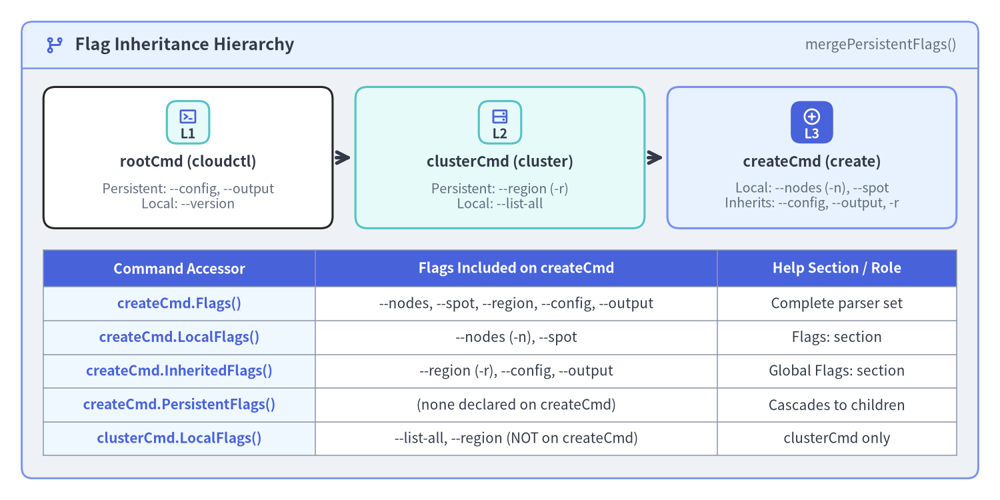
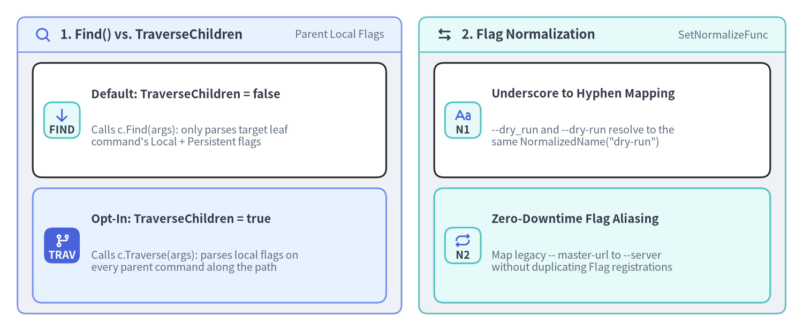

Persistent, Local & Inherited Flags (spf13/pflag)
Cobra delegates flag registration and parsing to github.com/spf13/pflag, a drop-in replacement for Go's standard flag package that implements POSIX/GNU-style --long and -s flags. On top of pflag, Cobra layers a hierarchical flag inheritance model (PersistentFlags(), Flags(), InheritedFlags(), LocalFlags()), parent flag traversal (TraverseChildren), and global flag name normalization (SetGlobalNormalizationFunc). This page covers every flag mechanism in Cobra v1.10.2.

Source Code
from drawlib.canvas import save, setup
from drawlib.icons import phosphor
from drawlib.preset_colors import CssColors
from drawlib.smartarts import CardList, Panel, Table
from drawlib.styles import Colors, Styles
setup(width=184, height=92, dpi=150)
outer = Panel(
"Flag Inheritance Hierarchy",
"mergePersistentFlags()",
style=Styles.Neutral.patch(shape_r=2.0),
header_style=Styles.PrimaryNeutral.patch(shape_line_width=1.2),
text_style=Styles.DarkBold.patch(text_size=12.0),
description_style=Styles.Muted.patch(text_size=10.0),
icon=phosphor.git_branch,
icon_style=Styles.PrimaryBold,
header_variant="filled",
header_height=8.5,
)
outer.draw((4.0, 4.0), width=176.0, height=84.0)
tree_cards = CardList(
style=Styles.White,
text_style=Styles.DarkBold.patch(text_size=10.5),
description_style=Styles.Muted.patch(text_size=9.5),
badge_shape="rounded_rect",
badge_style=Styles.SecondaryNeutral,
badge_text_style=Styles.DarkBold.patch(text_size=9.5),
icon_style=Styles.PrimaryBold,
direction="horizontal",
show_arrows=True,
arrow_style=Styles.DarkBold,
spacing=4.0,
)
tree_cards.add(
"rootCmd (cloudctl)",
"Persistent: --config, --output\nLocal: --version",
badge_text="L1",
icon=phosphor.terminal_window,
)
tree_cards.add(
"clusterCmd (cluster)",
"Persistent: --region (-r)\nLocal: --list-all",
badge_text="L2",
icon=phosphor.hard_drives,
style=Styles.SecondaryNeutral,
)
tree_cards.add(
"createCmd (create)",
"Local: --nodes (-n), --spot\nInherits: --config, --output, -r",
badge_text="L3",
icon=phosphor.plus_circle,
style=Styles.PrimaryNeutral,
badge_style=Styles.PrimaryFlat,
badge_text_style=Styles.WhiteBold.patch(text_size=9.5),
icon_style=Styles.WhiteBold,
)
tree_cards.draw(xy=(8.0, 50.0), width=168.0, height=26.0)
tbl = Table(
cell_style=Styles.White,
text_style=Styles.Dark.patch(text_size=10.0),
header_cell_style=Styles.PrimaryFlat,
header_text_style=Styles.WhiteBold.patch(text_size=10.0),
border_style=Styles.MutedThin,
)
tbl.set_style_cell_evenodd(
even_color=Colors.Light,
even_text_style=Styles.Dark.patch(text_size=10.0),
odd_color=Colors.White,
odd_text_style=Styles.Dark.patch(text_size=10.0),
)
tbl.set_style_cell_header(
background_color=Styles.PrimaryFlat.shape_fill_color,
text_style=Styles.WhiteBold.patch(text_size=10.0),
)
tbl.set_style_cell(
background_color=CssColors.AliceBlue,
text_style=Styles.PrimaryBold.patch(text_size=10.0),
rows=[1, 2, 3, 4, 5],
columns=[0],
)
rows = [
["Command Accessor", "Flags Included on createCmd", "Help Section / Role"],
["createCmd.Flags()", "--nodes, --spot, --region, --config, --output", "Complete parser set"],
["createCmd.LocalFlags()", "--nodes (-n), --spot", "Flags: section"],
["createCmd.InheritedFlags()", "--region (-r), --config, --output", "Global Flags: section"],
["createCmd.PersistentFlags()", "(none declared on createCmd)", "Cascades to children"],
["clusterCmd.LocalFlags()", "--list-all, --region (NOT on createCmd)", "clusterCmd only"],
]
tbl.draw_flexible(
xy=(8.0, 46.0),
column_widths=[50.0, 74.0, 44.0],
row_heights=[6.8, 6.2, 6.2, 6.2, 6.2, 6.2],
data=rows,
align="top_left",
)
save()
1. PersistentFlags() vs. Flags() and How Inheritance Works
Every cobra.Command maintains two primary pflag.FlagSet instances when you configure it:
cmd.Flags()(c.flags): Registers flags that apply only to this specific command. WhenmergePersistentFlags()runs prior toParseFlags(),c.flagsalso receives all persistent flags fromc.PersistentFlags()and all ancestor commands (c.parentsPflags).cmd.PersistentFlags()(c.pflags): Registers flags that apply to this command AND every descendant subcommand beneath it (root -> child -> grandchild).
The 5 FlagSet Accessors on cobra.Command
| Method | Internal Backing Field | What It Returns |
|---|---|---|
cmd.Flags() |
c.flags |
Complete active FlagSet after mergePersistentFlags() (local + own persistent + inherited parent persistent). |
cmd.PersistentFlags() |
c.pflags |
Persistent flags declared directly on cmd. |
cmd.LocalFlags() |
c.lflags (computed) |
Flags declared directly on cmd (both Flags() and PersistentFlags()), plus any flag that shadows a parent persistent flag. Rendered under Flags: in --help. |
cmd.InheritedFlags() |
c.iflags (computed) |
Persistent flags inherited from parent/ancestor commands (c.parentsPflags), excluding shadowed flags. Rendered under Global Flags: in --help. |
cmd.LocalNonPersistentFlags() |
Computed FlagSet |
Flags declared on cmd.Flags() that are not in cmd.PersistentFlags(). |
Shadowing Parent Persistent Flags: If
rootCmd.PersistentFlags()defines--timeout=30sand a childdeployCmd.Flags()defines its own local--timeout=5m,mergePersistentFlags()preservesdeployCmd's local--timeoutdefinition (LocalFlagsincludes it, andInheritedFlagsomits it).
2. Typed Flag Binding with spf13/pflag
Always prefer *Var / *VarP pointer-binding methods bound to fields of your per-command *Options struct (rather than calling cmd.Flags().GetString("...") inside RunE), so typos in flag names are impossible and Validate() works on strongly-typed Go fields:
package cluster
import (
"net"
"time"
"github.com/spf13/cobra"
)
type CreateOptions struct {
ClusterName string
Nodes int
Spot bool
Timeout time.Duration
Zones []string
Labels map[string]string
APIServerIP net.IP
Verbosity int
}
func NewCmdClusterCreate() *cobra.Command {
o := &CreateOptions{}
cmd := &cobra.Command{
Use: "create <cluster-name>",
Short: "Create a new Kubernetes cluster",
Args: cobra.ExactArgs(1),
RunE: func(cmd *cobra.Command, args []string) error {
o.ClusterName = args[0]
// Inspect whether the user explicitly passed --nodes on the CLI
if cmd.Flags().Changed("nodes") {
cmd.Printf("Explicit node count requested: %d\n", o.Nodes)
}
return nil
},
}
f := cmd.Flags()
// 1. Primitives: IntVarP, BoolVar, DurationVar (P suffix = accepts 1-char shorthand)
f.IntVarP(&o.Nodes, "nodes", "n", 3, "Initial worker node count")
f.BoolVar(&o.Spot, "spot", false, "Use preemptible spot instances")
f.DurationVar(&o.Timeout, "timeout", 10*time.Minute, "Provisioning timeout (e.g. 5m, 300s)")
// 2. Slices & Maps: StringSliceVar splits commas ("a,b"); StringArrayVar does NOT split commas
f.StringSliceVarP(&o.Zones, "zone", "z", []string{"us-east-1a"}, "Target availability zones (comma-separated or repeated)")
f.StringToStringVar(&o.Labels, "label", nil, "Key=value cluster labels (e.g. --label env=prod,team=core)")
// 3. Network & Count types: IPVar, CountVarP (-v = 1, -vvv = 3)
f.IPVar(&o.APIServerIP, "api-ip", net.ParseIP("10.0.0.1"), "Static control-plane IP")
f.CountVarP(&o.Verbosity, "verbose", "v", "Increase log verbosity (-v, -vv, -vvv)")
return cmd
}
Critical Distinction: StringSliceVar vs. StringArrayVar
pflag Method |
Input: --arg="a,b" --arg="c" |
Resulting []string |
When to Use |
|---|---|---|---|
StringSliceVar |
Splits on commas via CSV reader | []string{"a", "b", "c"} |
Tag lists, zone names, or simple identifiers that never contain literal commas. |
StringArrayVar |
Appends each flag occurrence verbatim | []string{"a,b", "c"} |
Filter expressions, JSON snippets, or file paths that may contain literal commas! |
3. Inspecting Explicit Flag Changes (Changed) & NoOptDefVal
3.1 Distinguishing Explicit Zero Values from Defaults (Flags().Changed)
In Go, a boolean flag defaults to false and an integer flag defaults to 0. When implementing PATCH / update commands (cloudctl cluster update prod --nodes=0), how do you know whether the user explicitly passed --nodes=0 (scale down to zero) versus omitting --nodes entirely?
Use cmd.Flags().Changed("nodes"):
if cmd.Flags().Changed("nodes") {
// User explicitly passed --nodes (even if the value equals the default 0!)
patchReq.Nodes = &o.Nodes
}
3.2 Optional Flag Values (NoOptDefVal)
For flags that can be used both as a boolean switch (--output) and with an explicit value (--output=json), set Flag.NoOptDefVal:
cmd.Flags().StringVarP(&o.Output, "output", "o", "table", "Output format (table|json|yaml)")
cmd.Flags().Lookup("output").NoOptDefVal = "json"
// Usage:
// cloudctl get pods -> o.Output == "table" (default)
// cloudctl get pods --output -> o.Output == "json" (NoOptDefVal)
// cloudctl get pods -o=yaml -> o.Output == "yaml" (explicit value)
4. TraverseChildren & Global Flag Normalization

Source Code
from drawlib.canvas import save, setup
from drawlib.icons import phosphor
from drawlib.smartarts import CardList, Panel
from drawlib.styles import Styles
setup(width=184, height=76, dpi=150)
left_panel = Panel(
"1. Find() vs. TraverseChildren",
"Parent Local Flags",
style=Styles.Neutral.patch(shape_r=2.0),
header_style=Styles.PrimaryNeutral.patch(shape_line_width=1.2),
text_style=Styles.DarkBold.patch(text_size=11.5),
description_style=Styles.Muted.patch(text_size=9.5),
icon=phosphor.magnifying_glass,
icon_style=Styles.PrimaryBold,
header_variant="filled",
header_height=8.0,
)
left_panel.draw((4.0, 4.0), width=88.0, height=68.0)
l_xy, l_w, l_h = left_panel.get_content_box((4.0, 4.0), width=88.0, height=68.0, padding=(3.5, 2.5))
trav_cards = CardList(
style=Styles.White,
text_style=Styles.DarkBold.patch(text_size=10.5),
description_style=Styles.Muted.patch(text_size=9.5),
badge_shape="rounded_rect",
badge_style=Styles.SecondaryNeutral,
badge_text_style=Styles.DarkBold.patch(text_size=9.5),
icon_style=Styles.PrimaryBold,
direction="vertical",
spacing=2.5,
)
trav_cards.add(
"Default: TraverseChildren = false",
"Calls c.Find(args): only parses target leaf\ncommand's Local + Persistent flags",
badge_text="FIND",
icon=phosphor.arrow_down,
)
trav_cards.add(
"Opt-In: TraverseChildren = true",
"Calls c.Traverse(args): parses local flags on\nevery parent command along the path",
badge_text="TRAV",
icon=phosphor.git_Commit if hasattr(phosphor, "git_Commit") else phosphor.git_branch,
style=Styles.PrimaryNeutral,
badge_style=Styles.PrimaryFlat,
badge_text_style=Styles.WhiteBold.patch(text_size=9.5),
icon_style=Styles.WhiteBold,
)
trav_cards.draw(l_xy, width=l_w, height=l_h)
right_panel = Panel(
"2. Flag Normalization",
"SetNormalizeFunc",
style=Styles.Neutral.patch(shape_r=2.0),
header_style=Styles.SecondaryNeutral.patch(shape_line_width=1.2),
text_style=Styles.DarkBold.patch(text_size=11.5),
description_style=Styles.Muted.patch(text_size=9.5),
icon=phosphor.arrows_left_right,
icon_style=Styles.DarkBold,
header_variant="filled",
header_height=8.0,
)
right_panel.draw((96.0, 4.0), width=84.0, height=68.0)
r_xy, r_w, r_h = right_panel.get_content_box((96.0, 4.0), width=84.0, height=68.0, padding=(3.5, 2.5))
norm_cards = CardList(
style=Styles.White,
text_style=Styles.DarkBold.patch(text_size=10.5),
description_style=Styles.Muted.patch(text_size=9.5),
badge_shape="rounded_rect",
badge_style=Styles.SecondaryNeutral,
badge_text_style=Styles.DarkBold.patch(text_size=9.5),
icon_style=Styles.PrimaryBold,
direction="vertical",
spacing=2.5,
)
norm_cards.add(
"Underscore to Hyphen Mapping",
"--dry_run and --dry-run resolve to the\nsame NormalizedName(\"dry-run\")",
badge_text="N1",
icon=phosphor.text_aa,
)
norm_cards.add(
"Zero-Downtime Flag Aliasing",
"Map legacy -- master-url to --server\nwithout duplicating Flag registrations",
badge_text="N2",
icon=phosphor.repeat,
style=Styles.SecondaryNeutral,
)
norm_cards.draw(r_xy, width=r_w, height=r_h)
save()
4.1 When Do You Need TraverseChildren: true?
By default (TraverseChildren: false), Cobra uses c.Find(args) to locate the target subcommand and only calls ParseFlags() once on that leaf command. Because persistent flags on parent commands are merged into the leaf command's Flags(), cloudctl --config=prod.yaml cluster create web works automatically without TraverseChildren: true.
You only need rootCmd.TraverseChildren = true when a parent command defines non-persistent local Flags() (rootCmd.Flags().StringVar(...)) and you want users to pass those parent-local flags before a subcommand (docker --tlsverify container ls).
4.2 Unifying Flag Names with SetGlobalNormalizationFunc
To accept both --dry_run (underscores) and --dry-run (hyphens) across your entire CLI tree—or to alias a renamed flag without breaking existing scripts—register a global normalization function on your root command:
import (
"strings"
"github.com/spf13/cobra"
"github.com/spf13/pflag"
)
func configureFlagNormalization(rootCmd *cobra.Command) {
rootCmd.SetGlobalNormalizationFunc(func(f *pflag.FlagSet, name string) pflag.NormalizedName {
// 1. Canonicalize all underscores to hyphens (--dry_run -> --dry-run)
normalized := strings.ReplaceAll(name, "_", "-")
// 2. Alias legacy flag names transparently
switch normalized {
case "master-url":
normalized = "server"
}
return pflag.NormalizedName(normalized)
})
}
When rootCmd.SetGlobalNormalizationFunc(fn) is called, Cobra applies fn to rootCmd.Flags(), rootCmd.PersistentFlags(), and recursively propagates it to every child command added via AddCommand().
Next Steps
Continue to Positional Args & Flag Group Constraints to learn how to validate positional arguments (ExactArgs, MatchAll) and enforce declarative flag relationships (MarkFlagsMutuallyExclusive, MarkFlagsRequiredTogether).